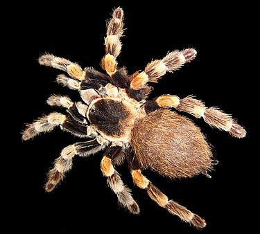

Vispārīgs raksturojums
Bezmugurkaulnieki ir sugām bagātākā dzīvnieku valsts daļa pasaulē un arī Latvijā. Latvijā zināmo sugu skaits pārsniedz 14 000, no kuriem lielākā daļa ir kukaiņi. Vairumam raksturīgs niecīgs ķermeņa izmērs, taču liels īpatņu skaits, kas ir pamats bezmugurkaulnieku ievērojamai lomai ekosistēmu funkcionēšanā. Daudzi bezmugurkaulnieki dzīvo simbiozē ar mikroorganismiem un ir galvenie detrīta noārdītāji. Augstās auglības un vairošanās intensitātes dēļ daudzas kukaiņu, ērču un nematožu sugas ir bīstami kaitēkļi lauksaimniecībai. Kukaiņi un ērces var pārnēsāt arī augu un dzīvnieku slimību ierosinātājus. Plaši izplatīts ir parazītisms. Plēsīgās un parazītiskās sugas ir nozīmīgi citu bezmugurkaulnieku skaita regulētāji. Kukaiņi ir galvenie ziedaugu apputeksnētāji. Bites ir senākie domesticētie kukaiņi. Bezmugurkaulnieki ir perspektīvi olbaltumvielu iegūšanai, piemēram, Latvijā audzē sliekas biohumusa iegūšanai. Bezmugurkaulnieku fauna ir dinamiska laikā. Pastāv viedoklis, ka boreālās sugas mūsdienās pakāpeniski atkāpjas uz ziemeļiem un to vietā ienāk mērenā klimata sugas.
Informācija ņemta no:Nacionālās enciklopēdijas mājaslapas
Attēls ņemts no:Vikipēdijas mājaslapas